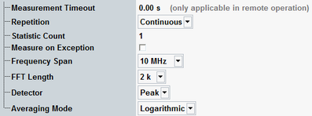

The parameters on the "Measurement Control" tab define how the R&S CMW acquires measurement data.

Defines a timeout for the FFT spectrum measurement in remote operation. "0.00 s" means that the measurement never runs into a timeout. See detailed information in the remote command description.
Remote command:Defines how often the measurement is repeated if it is not stopped explicitly or by a failed limit check.
- Continuous: The measurement is continued until it is explicitly terminated. The results are periodically updated.
- Single-Shot: The measurement is stopped after one statistics cycle.
Single-shot is preferable if only a single measurement result is required under fixed conditions, which is typical for remote-controlled measurements. Continuous mode is suitable for monitoring the evolution of the measurement results in time and observe how they depend on the measurement configuration, which is typically done in manual control. The reset/preset values therefore differ from each other.
Defines the number of measurement intervals per measurement cycle (statistics cycle, single-shot measurement). This value is also relevant for continuous measurements, because the averaging procedures depend on the statistic count.
In the FFT spectrum measurement, a measurement interval is a complete measurement, comprising the number of samples defined by the "FFT Length".
Remote command:Specifies whether measurement results that the R&S CMW identifies as faulty or inaccurate are rejected. A faulty result occurs, for example, when an overload is detected. In remote control, the cause of the error is indicated by the "reliability indicator".
- Off: Faulty results are rejected. The measurement is continued. The statistical counters are not reset. Use this mode to ensure that a single faulty result does not affect the entire measurement.
- On: Results are never rejected. Use this mode for development purposes, if you want to analyze the reason for occasional wrong transmissions.
Defines the frequency span for the FFT spectrum analyzer and adjusts the x-axis scale of the spectrum diagram.
The R&S CMW adjusts the sampling rate to ensure that the FFT result covers the selected span. The time domain diagram is rescaled according to the new time record length. The span leaves the number of samples ("FFT Length") unchanged but affects the resolution bandwidth (RBW), see "Frequency Settings and Resolution Bandwidth". Both the sampling rate and the RBW increase with the selected span.
Remote command:Sets the number of samples that the R&S CMW uses for the FFT analysis. The sampling rate is not affected so that the total time record length is proportional to the "FFT length". The time domain diagram is rescaled according to the new time record length. The frequency span (and thus the spectrum diagram) remains unchanged.
The number of samples is always an integer power of two. A "1k" length corresponds to 1024 samples, a "16k" length corresponds to 16384 samples. A large FFT length improves the frequency resolution, at the expense of the measurement speed, see "Frequency Settings and Resolution Bandwidth".
The "Frequency Span" and "FFT Length" settings both affect the resolution bandwidth (RBW). Methods to improve the frequency resolution (i.e. decrease the RBW):
- Select a smaller span (if you do not want to slow down the measurement and do not need a large span).
- Select a large FFT length (if you need a large span).
Defines how the spectrum curve is calculated from the total set of frequency domain samples.
See also: "Statistical Results"
For an FFT length "nk" (n = 1, 2, 4, 8, 16), the passband of the receiver filter contains 4 * n * 801 samples. The factor 4 is due to upsampling. The detector combines 4 * n adjacent samples into a single frequency point.
"Peak" | The sample with the largest power is displayed. This setting ensures that narrow peaks are not smoothed out due to averaging. |
"RMS" | The RMS value of the n samples is displayed. Over-estimation of stochastic signals (noise) is avoided. |
Defines how the R&S CMW calculates the average FFT trace from the current results.
"Logarithmic" | Averaging of the displayed current dBm values. In frequency ranges where the trace shows random variations (noise), logarithmic averaging decreases the displayed signal level. |
"Linear" | Averaging of the linear powers: The current dBm values are converted to linear power values (in W) and averaged. The result is reconverted into a dBm value and displayed. The result is the true average measured power at any trace point including random effects. |